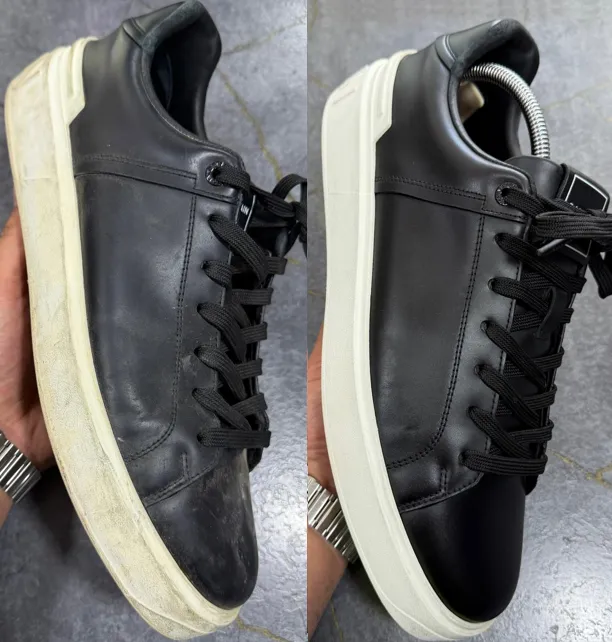
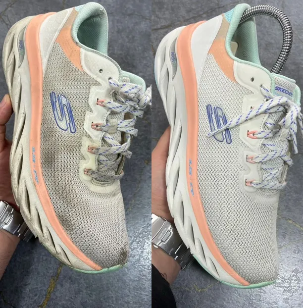
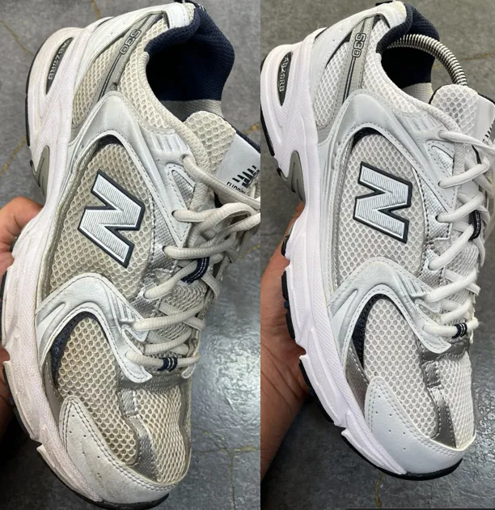
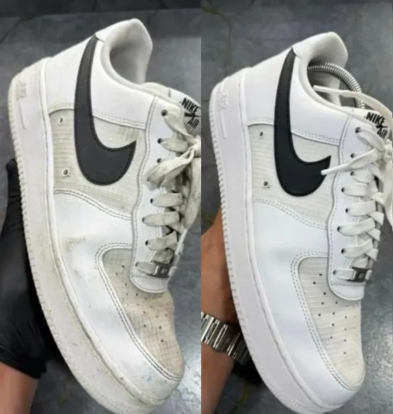
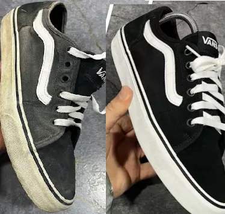
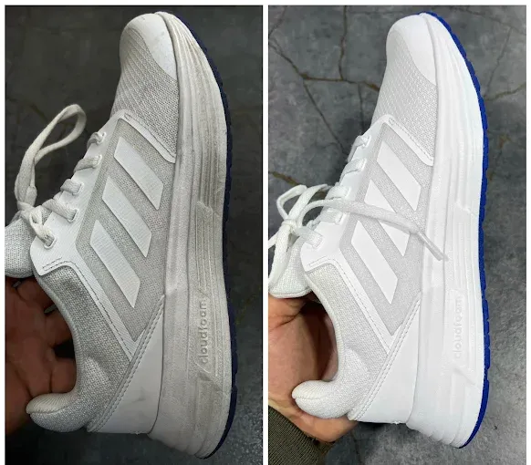

Hizmet Tanımı & Sürecimiz
Ayakkabıların çamaşır makinesinde yıkanması taban açılmalarına, yapışkanların erimesine ve derilerin çatlamasına sebep olur. Dry Dutch lostra hizmeti ile spor, süet ve deri ayakkabılarınızı orijinal dokusunu koruyarak dezenfekte ediyor ve boyuyoruz.
Neden Biz? Beyaz tabanlı spor ayakkabılardaki sararmaları özel UV beyazlatma sistemlerimizle gideriyor, süet ayakkabılara su/leke itici sprey uyguluyoruz.
Süreç Detayları: Ayakkabıların materyal analizi yapılır. İç ve dış tabanları anti-bakteriyel şampuanlarla fırçalanır, taban sararmaları giderilir. Deri ürünler besleyici vakslarla boyanır, süetler taranır ve kalıplanarak kurutulur.
Ümraniye Ayakkabı Temizleme & Lostra Fiyat Listesi
Fiyatlarımız kumaş kalitesine, ürünün leke durumuna ve gereken özel narin el işçiliğine göre değişiklik gösterebilir. Aşağıda listelenen fiyatlar başlangıç fiyatlarıdır.
| Ürün / İşlem Adı | Başlangıç Fiyatı |
|---|---|
 Blazer Mid 77 Ayakkabı Temizliği
Blazer Mid 77 Ayakkabı Temizliği
|
500 TL |
|
 Alexander Mcqueen Ayakkabı Temizliği |
1500 TL |
|
 Skechers Ayakkabı Temizliği |
500 TL |
|
 New Balance Ayakkabı Temizliği |
500 TL |
|
 Air Force Ayakkabı Temizliği |
500 TL |
|
 Vans Ayakkabı Temizliği |
500 TL |
|
 Adidas Spor Ayakkabı Temizliği |
500 TL |
Sıkça Sorulan Sorular
Ayakkabıların taban sararması geçer mi?
Evet. Spor ayakkabı tabanlarındaki sararmalar için UV ışınlı özel lostra beyazlatma formülü kullanıyoruz.
Süet ayakkabılardaki lekeler çıkar mı?
Süet hassas bir malzeme olup, özel nubuk fırçaları ve temizlik köpükleriyle kumaşa zarar vermeden lekelerden arındırılır.
Ayakkabı temizliği ne kadar sürer?
Detaylı kuruma ve vaks sabitleme aşamaları nedeniyle lostra süremiz ortalama 3 iş günüdür.
Hemen Temiz Vale Siparişi Verin
Ümraniye bölgesinde kapınızdan ücretsiz alıp kapınıza askılı ambalajlarla geri getiriyoruz. Sipariş kanallarımız: